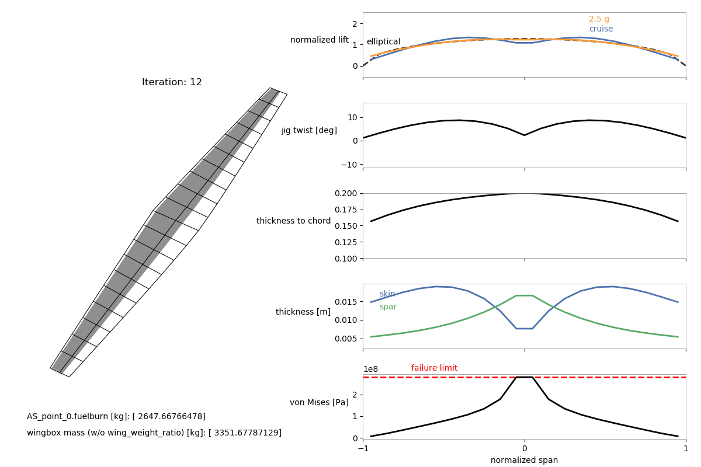

Aerostructural with wingbox (Q400)¶
This is an additional example of a multipoint aerostructural optimization with the wingbox model using a wing based on the Bombardier Q400. Here we also create a custom mesh instead of using one provided by OpenAeroStruct. Make sure you go through the Aerostructural with Wingbox Walkthrough before trying to understand this example.
"""
This example script can be used to run a multipoint aerostructural optimization
for a wing based on the Bombardier Q400 with the wingbox model.
We create a custom mesh for this wing in this script.
The fuel burn from the cruise case is the objective function and a 2.5g
maneuver case is used for the structural sizing.
After running the optimization, use the 'plot_wingbox.py' script in the utils/
directory (e.g., as 'python ../utils/plot_wingbox.py aerostruct.db' if running
from this directory) to vizualize the results.
This visualization script is based on the plot_wing.py script.
It's still a bit hacky and will probably not work as it is for other types of
cases for now.
"""
from __future__ import division, print_function
import numpy as np
from openaerostruct.geometry.utils import generate_mesh
from openaerostruct.integration.aerostruct_groups import AerostructGeometry, AerostructPoint
import openmdao.api as om
from openaerostruct.structures.wingbox_fuel_vol_delta import WingboxFuelVolDelta
from openaerostruct.utils.constants import grav_constant
# Provide coordinates for a portion of an airfoil for the wingbox cross-section as an nparray with dtype=complex (to work with the complex-step approximation for derivatives).
# These should be for an airfoil with the chord scaled to 1.
# We use the 10% to 60% portion of the NASA SC2-0612 airfoil for this case
# We use the coordinates available from airfoiltools.com. Using such a large number of coordinates is not necessary.
# The first and last x-coordinates of the upper and lower surfaces must be the same
upper_x = np.array([0.1, 0.11, 0.12, 0.13, 0.14, 0.15, 0.16, 0.17, 0.18, 0.19, 0.2, 0.21, 0.22, 0.23, 0.24, 0.25, 0.26, 0.27, 0.28, 0.29, 0.3, 0.31, 0.32, 0.33, 0.34, 0.35, 0.36, 0.37, 0.38, 0.39, 0.4, 0.41, 0.42, 0.43, 0.44, 0.45, 0.46, 0.47, 0.48, 0.49, 0.5, 0.51, 0.52, 0.53, 0.54, 0.55, 0.56, 0.57, 0.58, 0.59, 0.6], dtype = 'complex128')
lower_x = np.array([0.1, 0.11, 0.12, 0.13, 0.14, 0.15, 0.16, 0.17, 0.18, 0.19, 0.2, 0.21, 0.22, 0.23, 0.24, 0.25, 0.26, 0.27, 0.28, 0.29, 0.3, 0.31, 0.32, 0.33, 0.34, 0.35, 0.36, 0.37, 0.38, 0.39, 0.4, 0.41, 0.42, 0.43, 0.44, 0.45, 0.46, 0.47, 0.48, 0.49, 0.5, 0.51, 0.52, 0.53, 0.54, 0.55, 0.56, 0.57, 0.58, 0.59, 0.6], dtype = 'complex128')
upper_y = np.array([ 0.0447, 0.046, 0.0472, 0.0484, 0.0495, 0.0505, 0.0514, 0.0523, 0.0531, 0.0538, 0.0545, 0.0551, 0.0557, 0.0563, 0.0568, 0.0573, 0.0577, 0.0581, 0.0585, 0.0588, 0.0591, 0.0593, 0.0595, 0.0597, 0.0599, 0.06, 0.0601, 0.0602, 0.0602, 0.0602, 0.0602, 0.0602, 0.0601, 0.06, 0.0599, 0.0598, 0.0596, 0.0594, 0.0592, 0.0589, 0.0586, 0.0583, 0.058, 0.0576, 0.0572, 0.0568, 0.0563, 0.0558, 0.0553, 0.0547, 0.0541], dtype = 'complex128')
lower_y = np.array([-0.0447, -0.046, -0.0473, -0.0485, -0.0496, -0.0506, -0.0515, -0.0524, -0.0532, -0.054, -0.0547, -0.0554, -0.056, -0.0565, -0.057, -0.0575, -0.0579, -0.0583, -0.0586, -0.0589, -0.0592, -0.0594, -0.0595, -0.0596, -0.0597, -0.0598, -0.0598, -0.0598, -0.0598, -0.0597, -0.0596, -0.0594, -0.0592, -0.0589, -0.0586, -0.0582, -0.0578, -0.0573, -0.0567, -0.0561, -0.0554, -0.0546, -0.0538, -0.0529, -0.0519, -0.0509, -0.0497, -0.0485, -0.0472, -0.0458, -0.0444], dtype = 'complex128')
# Here we create a custom mesh for the wing
# It is evenly spaced with nx chordwise nodal points and ny spanwise nodal points for the half-span
span = 28.42 # wing span in m
root_chord = 3.34 # root chord in m
nx = 3 # number of chordwise nodal points (should be odd)
ny = 11 # number of spanwise nodal points for the half-span
# Initialize the 3-D mesh object. Chordwise, spanwise, then the 3D coordinates.
mesh = np.zeros((nx, ny, 3))
# Start away from the symmetry plane and approach the plane as the array indices increase.
# The form of this 3-D array can be very confusing initially.
# For each node we are providing the x, y, and z coordinates.
# x is chordwise, y is spanwise, and z is up.
# For example (for a mesh with 5 chordwise nodes and 15 spanwise nodes for the half wing), the node for the leading edge at the tip would be specified as mesh[0, 0, :] = np.array([1.1356, -14.21, 0.])
# and the node at the trailing edge at the root would be mesh[4, 14, :] = np.array([3.34, 0., 0.]).
# We only provide the left half of the wing because we use symmetry.
# Print the following mesh and elements of the mesh to better understand the form.
mesh[:, :, 1] = np.linspace(-span/2, 0, ny)
mesh[0, :, 0] = 0.34 * root_chord * np.linspace(1.0, 0., ny)
mesh[2, :, 0] = root_chord * (np.linspace(0.4, 1.0, ny) + 0.34 * np.linspace(1.0, 0., ny))
mesh[1, :, 0] = ( mesh[2, :, 0] + mesh[0, :, 0] ) / 2
# print(mesh)
surf_dict = {
# Wing definition
'name' : 'wing', # name of the surface
'symmetry' : True, # if true, model one half of wing
'S_ref_type' : 'wetted', # how we compute the wing area,
# can be 'wetted' or 'projected'
'mesh' : mesh,
'twist_cp' : np.array([6., 7., 7., 7.]),
'fem_model_type' : 'wingbox',
'data_x_upper' : upper_x,
'data_x_lower' : lower_x,
'data_y_upper' : upper_y,
'data_y_lower' : lower_y,
'spar_thickness_cp' : np.array([0.004, 0.004, 0.004, 0.004]), # [m]
'skin_thickness_cp' : np.array([0.003, 0.006, 0.010, 0.012]), # [m]
'original_wingbox_airfoil_t_over_c' : 0.12,
# Aerodynamic deltas.
# These CL0 and CD0 values are added to the CL and CD
# obtained from aerodynamic analysis of the surface to get
# the total CL and CD.
# These CL0 and CD0 values do not vary wrt alpha.
# They can be used to account for things that are not included, such as contributions from the fuselage, nacelles, tail surfaces, etc.
'CL0' : 0.0,
'CD0' : 0.0142,
'with_viscous' : True, # if true, compute viscous drag
'with_wave' : True, # if true, compute wave drag
# Airfoil properties for viscous drag calculation
'k_lam' : 0.05, # percentage of chord with laminar
# flow, used for viscous drag
'c_max_t' : .38, # chordwise location of maximum thickness
't_over_c_cp' : np.array([0.1, 0.1, 0.15, 0.15]),
# Structural values are based on aluminum 7075
'E' : 73.1e9, # [Pa] Young's modulus
'G' : (73.1e9/2/1.33), # [Pa] shear modulus (calculated using E and the Poisson's ratio here)
'yield' : (420.e6 / 1.5), # [Pa] allowable yield stress
'mrho' : 2.78e3, # [kg/m^3] material density
'strength_factor_for_upper_skin' : 1.0, # the yield stress is multiplied by this factor for the upper skin
'wing_weight_ratio' : 1.25,
'exact_failure_constraint' : False, # if false, use KS function
'struct_weight_relief' : True,
'distributed_fuel_weight' : True,
'fuel_density' : 803., # [kg/m^3] fuel density (only needed if the fuel-in-wing volume constraint is used)
'Wf_reserve' :500., # [kg] reserve fuel mass
}
surfaces = [surf_dict]
# Create the problem and assign the model group
prob = om.Problem()
# Add problem information as an independent variables component
indep_var_comp = om.IndepVarComp()
indep_var_comp.add_output('v', val=np.array([.5 * 310.95, .3 * 340.294]), units='m/s')
indep_var_comp.add_output('alpha', val=0., units='deg')
indep_var_comp.add_output('alpha_maneuver', val=0., units='deg')
indep_var_comp.add_output('Mach_number', val=np.array([0.5, 0.3]))
indep_var_comp.add_output('re',val=np.array([.569*310.95*.5*1./(1.56*1e-5), \
1.225*340.294*.3*1./(1.81206*1e-5)]), units='1/m')
indep_var_comp.add_output('rho', val=np.array([.569, 1.225]), units='kg/m**3')
indep_var_comp.add_output('CT', val=0.43/3600, units='1/s')
indep_var_comp.add_output('R', val=2e6, units='m')
indep_var_comp.add_output('W0', val=25400 + surf_dict['Wf_reserve'], units='kg')
indep_var_comp.add_output('speed_of_sound', val= np.array([310.95, 340.294]), units='m/s')
indep_var_comp.add_output('load_factor', val=np.array([1., 2.5]))
indep_var_comp.add_output('empty_cg', val=np.zeros((3)), units='m')
indep_var_comp.add_output('fuel_mass', val=3000., units='kg')
prob.model.add_subsystem('prob_vars',
indep_var_comp,
promotes=['*'])
# Loop over each surface in the surfaces list
for surface in surfaces:
# Get the surface name and create a group to contain components
# only for this surface
name = surface['name']
aerostruct_group = AerostructGeometry(surface=surface)
# Add group to the problem with the name of the surface.
prob.model.add_subsystem(name, aerostruct_group)
# Loop through and add a certain number of aerostruct points
for i in range(2):
point_name = 'AS_point_{}'.format(i)
# Connect the parameters within the model for each aerostruct point
# Create the aero point group and add it to the model
AS_point = AerostructPoint(surfaces=surfaces, internally_connect_fuelburn=False)
prob.model.add_subsystem(point_name, AS_point)
# Connect flow properties to the analysis point
prob.model.connect('v', point_name + '.v', src_indices=[i])
prob.model.connect('Mach_number', point_name + '.Mach_number', src_indices=[i])
prob.model.connect('re', point_name + '.re', src_indices=[i])
prob.model.connect('rho', point_name + '.rho', src_indices=[i])
prob.model.connect('CT', point_name + '.CT')
prob.model.connect('R', point_name + '.R')
prob.model.connect('W0', point_name + '.W0')
prob.model.connect('speed_of_sound', point_name + '.speed_of_sound', src_indices=[i])
prob.model.connect('empty_cg', point_name + '.empty_cg')
prob.model.connect('load_factor', point_name + '.load_factor', src_indices=[i])
prob.model.connect('fuel_mass', point_name + '.total_perf.L_equals_W.fuelburn')
prob.model.connect('fuel_mass', point_name + '.total_perf.CG.fuelburn')
for surface in surfaces:
name = surface['name']
if surf_dict['distributed_fuel_weight']:
prob.model.connect('load_factor', point_name + '.coupled.load_factor', src_indices=[i])
com_name = point_name + '.' + name + '_perf.'
prob.model.connect(name + '.local_stiff_transformed', point_name + '.coupled.' + name + '.local_stiff_transformed')
prob.model.connect(name + '.nodes', point_name + '.coupled.' + name + '.nodes')
# Connect aerodyamic mesh to coupled group mesh
prob.model.connect(name + '.mesh', point_name + '.coupled.' + name + '.mesh')
if surf_dict['struct_weight_relief']:
prob.model.connect(name + '.element_mass', point_name + '.coupled.' + name + '.element_mass')
# Connect performance calculation variables
prob.model.connect(name + '.nodes', com_name + 'nodes')
prob.model.connect(name + '.cg_location', point_name + '.' + 'total_perf.' + name + '_cg_location')
prob.model.connect(name + '.structural_mass', point_name + '.' + 'total_perf.' + name + '_structural_mass')
# Connect wingbox properties to von Mises stress calcs
prob.model.connect(name + '.Qz', com_name + 'Qz')
prob.model.connect(name + '.J', com_name + 'J')
prob.model.connect(name + '.A_enc', com_name + 'A_enc')
prob.model.connect(name + '.htop', com_name + 'htop')
prob.model.connect(name + '.hbottom', com_name + 'hbottom')
prob.model.connect(name + '.hfront', com_name + 'hfront')
prob.model.connect(name + '.hrear', com_name + 'hrear')
prob.model.connect(name + '.spar_thickness', com_name + 'spar_thickness')
prob.model.connect(name + '.t_over_c', com_name + 't_over_c')
prob.model.connect('alpha', 'AS_point_0' + '.alpha')
prob.model.connect('alpha_maneuver', 'AS_point_1' + '.alpha')
# Here we add the fuel volume constraint componenet to the model
prob.model.add_subsystem('fuel_vol_delta', WingboxFuelVolDelta(surface=surface))
prob.model.connect('wing.struct_setup.fuel_vols', 'fuel_vol_delta.fuel_vols')
prob.model.connect('AS_point_0.fuelburn', 'fuel_vol_delta.fuelburn')
if surf_dict['distributed_fuel_weight']:
prob.model.connect('wing.struct_setup.fuel_vols', 'AS_point_0.coupled.wing.struct_states.fuel_vols')
prob.model.connect('fuel_mass', 'AS_point_0.coupled.wing.struct_states.fuel_mass')
prob.model.connect('wing.struct_setup.fuel_vols', 'AS_point_1.coupled.wing.struct_states.fuel_vols')
prob.model.connect('fuel_mass', 'AS_point_1.coupled.wing.struct_states.fuel_mass')
comp = om.ExecComp('fuel_diff = (fuel_mass - fuelburn) / fuelburn', units='kg')
prob.model.add_subsystem('fuel_diff', comp,
promotes_inputs=['fuel_mass'],
promotes_outputs=['fuel_diff'])
prob.model.connect('AS_point_0.fuelburn', 'fuel_diff.fuelburn')
## Use these settings if you do not have pyOptSparse or SNOPT
prob.driver = om.ScipyOptimizeDriver()
prob.driver.options['optimizer'] = 'SLSQP'
prob.driver.options['tol'] = 1e-5
# # The following are the optimizer settings used for the EngOpt conference paper
# # Uncomment them if you can use SNOPT
# prob.driver = om.pyOptSparseDriver()
# prob.driver.options['optimizer'] = "SNOPT"
# prob.driver.opt_settings['Major optimality tolerance'] = 5e-6
# prob.driver.opt_settings['Major feasibility tolerance'] = 1e-8
# prob.driver.opt_settings['Major iterations limit'] = 200
recorder = om.SqliteRecorder("aerostruct.db")
prob.driver.add_recorder(recorder)
# We could also just use prob.driver.recording_options['includes']=['*'] here, but for large meshes the database file becomes extremely large. So we just select the variables we need.
prob.driver.recording_options['includes'] = [
'alpha', 'rho', 'v', 'cg',
'AS_point_1.cg', 'AS_point_0.cg',
'AS_point_0.coupled.wing_loads.loads',
'AS_point_1.coupled.wing_loads.loads',
'AS_point_0.coupled.wing.normals',
'AS_point_1.coupled.wing.normals',
'AS_point_0.coupled.wing.widths',
'AS_point_1.coupled.wing.widths',
'AS_point_0.coupled.aero_states.wing_sec_forces',
'AS_point_1.coupled.aero_states.wing_sec_forces',
'AS_point_0.wing_perf.CL1',
'AS_point_1.wing_perf.CL1',
'AS_point_0.coupled.wing.S_ref',
'AS_point_1.coupled.wing.S_ref',
'wing.geometry.twist',
'wing.mesh',
'wing.skin_thickness',
'wing.spar_thickness',
'wing.t_over_c',
'wing.structural_mass',
'AS_point_0.wing_perf.vonmises',
'AS_point_1.wing_perf.vonmises',
'AS_point_0.coupled.wing.def_mesh',
'AS_point_1.coupled.wing.def_mesh',
]
prob.driver.recording_options['record_objectives'] = True
prob.driver.recording_options['record_constraints'] = True
prob.driver.recording_options['record_desvars'] = True
prob.driver.recording_options['record_inputs'] = True
prob.model.add_objective('AS_point_0.fuelburn', scaler=1e-5)
prob.model.add_design_var('wing.twist_cp', lower=-15., upper=15., scaler=0.1)
prob.model.add_design_var('wing.spar_thickness_cp', lower=0.003, upper=0.1, scaler=1e2)
prob.model.add_design_var('wing.skin_thickness_cp', lower=0.003, upper=0.1, scaler=1e2)
prob.model.add_design_var('wing.geometry.t_over_c_cp', lower=0.07, upper=0.2, scaler=10.)
prob.model.add_design_var('fuel_mass', lower=0., upper=2e5, scaler=1e-5)
prob.model.add_design_var('alpha_maneuver', lower=-15., upper=15)
prob.model.add_constraint('AS_point_0.CL', equals=0.6)
prob.model.add_constraint('AS_point_1.L_equals_W', equals=0.)
prob.model.add_constraint('AS_point_1.wing_perf.failure', upper=0.)
prob.model.add_constraint('fuel_vol_delta.fuel_vol_delta', lower=0.)
prob.model.add_constraint('fuel_diff', equals=0.)
# Set up the problem
prob.setup()
# om.view_model(prob)
# prob.check_partials(form='central', compact_print=True)
prob.run_driver()
==================
AS_point_0.coupled
==================
NL: NLBGS 0 ; 79704.5646 1
NL: NLBGS 1 ; 68552.4805 0.86008224
NL: NLBGS 2 ; 2613.54894 0.0327904551
NL: NLBGS 3 ; 60.8763296 0.000763774695
NL: NLBGS 4 ; 0.255393507 3.20425196e-06
NL: NLBGS 5 ; 0.00764142967 9.58719203e-08
NL: NLBGS 6 ; 7.30100542e-05 9.16008444e-10
NL: NLBGS 7 ; 2.48033214e-06 3.11190727e-11
NL: NLBGS 8 ; 3.19390155e-08 4.0071752e-13
NL: NLBGS Converged
==================
AS_point_1.coupled
==================
NL: NLBGS 0 ; 82168.4406 1
NL: NLBGS 1 ; 63696.5109 0.77519435
NL: NLBGS 2 ; 2248.19709 0.0273608343
NL: NLBGS 3 ; 48.2357118 0.000587034529
NL: NLBGS 4 ; 0.187457743 2.28138373e-06
NL: NLBGS 5 ; 0.00516976271 6.29166462e-08
NL: NLBGS 6 ; 4.57801868e-05 5.57150489e-10
NL: NLBGS 7 ; 1.43427954e-06 1.7455358e-11
NL: NLBGS 8 ; 1.71626081e-08 2.08871046e-13
NL: NLBGS Converged
==================
AS_point_0.coupled
==================
NL: NLBGS 0 ; 1.15829227e-09 1
NL: NLBGS Converged
==================
AS_point_1.coupled
==================
NL: NLBGS 0 ; 5.71566029e-10 1
NL: NLBGS Converged
==================
AS_point_0.coupled
==================
NL: NLBGS 0 ; 24309.684 1
NL: NLBGS 1 ; 20390.0681 0.838763192
NL: NLBGS 2 ; 1833.28499 0.075413773
NL: NLBGS 3 ; 19.1163253 0.00078636667
NL: NLBGS 4 ; 0.254867059 1.04841782e-05
NL: NLBGS 5 ; 0.00172225262 7.08463599e-08
NL: NLBGS 6 ; 7.14695786e-05 2.93996329e-09
NL: NLBGS 7 ; 1.42608693e-06 5.86633265e-11
NL: NLBGS 8 ; 4.50024856e-08 1.8512164e-12
NL: NLBGS Converged
==================
AS_point_1.coupled
==================
NL: NLBGS 0 ; 137132.188 1
NL: NLBGS 1 ; 119196.618 0.869209629
NL: NLBGS 2 ; 18966.1623 0.138305693
NL: NLBGS 3 ; 875.559814 0.00638478702
NL: NLBGS 4 ; 3.2620414 2.37875691e-05
NL: NLBGS 5 ; 0.102676435 7.48740588e-07
NL: NLBGS 6 ; 0.000117746281 8.58633429e-10
NL: NLBGS 7 ; 2.11850434e-05 1.54486293e-10
NL: NLBGS 8 ; 1.10205321e-06 8.03642983e-12
NL: NLBGS 9 ; 5.15329866e-09 3.75790596e-14
NL: NLBGS Converged
==================
AS_point_0.coupled
==================
NL: NLBGS 0 ; 10923.3734 1
NL: NLBGS 1 ; 8940.45346 0.818470003
NL: NLBGS 2 ; 276.721056 0.0253329302
NL: NLBGS 3 ; 1.44210073 0.000132019723
NL: NLBGS 4 ; 0.00637165578 5.83304767e-07
NL: NLBGS 5 ; 4.41351152e-05 4.04042905e-09
NL: NLBGS 6 ; 4.27820877e-07 3.91656369e-11
NL: NLBGS 7 ; 3.86857498e-10 3.54155702e-14
NL: NLBGS Converged
==================
AS_point_1.coupled
==================
NL: NLBGS 0 ; 22924.0158 1
NL: NLBGS 1 ; 18317.2218 0.799040704
NL: NLBGS 2 ; 717.656006 0.0313058589
NL: NLBGS 3 ; 11.4022499 0.000497393214
NL: NLBGS 4 ; 0.239913487 1.0465596e-05
NL: NLBGS 5 ; 0.00151537668 6.61043288e-08
NL: NLBGS 6 ; 4.90163351e-05 2.13820892e-09
NL: NLBGS 7 ; 2.35202298e-06 1.02600827e-10
NL: NLBGS 8 ; 5.12115362e-08 2.2339688e-12
NL: NLBGS Converged
==================
AS_point_0.coupled
==================
NL: NLBGS 0 ; 11576.7346 1
NL: NLBGS 1 ; 9536.69943 0.823781472
NL: NLBGS 2 ; 180.949037 0.0156304039
NL: NLBGS 3 ; 0.699756472 6.04450649e-05
NL: NLBGS 4 ; 0.00141613777 1.22326185e-07
NL: NLBGS 5 ; 8.2277996e-06 7.10718516e-10
NL: NLBGS 6 ; 2.7486786e-08 2.37431254e-12
NL: NLBGS Converged
==================
AS_point_1.coupled
==================
NL: NLBGS 0 ; 16629.0745 1
NL: NLBGS 1 ; 12039.8278 0.724022723
NL: NLBGS 2 ; 261.433744 0.015721485
NL: NLBGS 3 ; 1.98104352 0.000119131316
NL: NLBGS 4 ; 0.0467806792 2.81318598e-06
NL: NLBGS 5 ; 0.00057661525 3.46751258e-08
NL: NLBGS 6 ; 7.37793228e-06 4.43676663e-10
NL: NLBGS 7 ; 2.36035459e-08 1.41941428e-12
NL: NLBGS Converged
==================
AS_point_0.coupled
==================
NL: NLBGS 0 ; 5470.68622 1
NL: NLBGS 1 ; 4259.76041 0.778651935
NL: NLBGS 2 ; 67.1467764 0.0122739221
NL: NLBGS 3 ; 0.127903634 2.33798155e-05
NL: NLBGS 4 ; 2.63442691e-05 4.81553283e-09
NL: NLBGS 5 ; 4.37883412e-07 8.00417707e-11
NL: NLBGS 6 ; 3.11742667e-09 5.69841981e-13
NL: NLBGS Converged
==================
AS_point_1.coupled
==================
NL: NLBGS 0 ; 10092.4537 1
NL: NLBGS 1 ; 6898.85858 0.683566038
NL: NLBGS 2 ; 39.382568 0.0039021797
NL: NLBGS 3 ; 0.627498878 6.21750564e-05
NL: NLBGS 4 ; 0.000897761608 8.89537505e-08
NL: NLBGS 5 ; 6.22025285e-05 6.16327113e-09
NL: NLBGS 6 ; 1.2003404e-07 1.18934447e-11
NL: NLBGS 7 ; 5.95092656e-09 5.89641205e-13
NL: NLBGS Converged
==================
AS_point_0.coupled
==================
NL: NLBGS 0 ; 1451.36305 1
NL: NLBGS 1 ; 1102.78335 0.759825976
NL: NLBGS 2 ; 16.2239917 0.0111784516
NL: NLBGS 3 ; 0.0245272554 1.68994624e-05
NL: NLBGS 4 ; 3.45854734e-05 2.38296499e-08
NL: NLBGS 5 ; 3.40729759e-07 2.34765353e-10
NL: NLBGS 6 ; 1.27567959e-09 8.7895278e-13
NL: NLBGS Converged
==================
AS_point_1.coupled
==================
NL: NLBGS 0 ; 2926.31572 1
NL: NLBGS 1 ; 1988.18516 0.679415808
NL: NLBGS 2 ; 16.5658125 0.00566097924
NL: NLBGS 3 ; 0.26318163 8.99361707e-05
NL: NLBGS 4 ; 0.00103132424 3.52430952e-07
NL: NLBGS 5 ; 4.67715431e-06 1.59830817e-09
NL: NLBGS 6 ; 5.88906475e-08 2.01245023e-11
NL: NLBGS Converged
==================
AS_point_0.coupled
==================
NL: NLBGS 0 ; 247.51655 1
NL: NLBGS 1 ; 209.930952 0.84814915
NL: NLBGS 2 ; 2.55476885 0.0103216082
NL: NLBGS 3 ; 0.00971406675 3.92461302e-05
NL: NLBGS 4 ; 1.05586173e-05 4.26582274e-08
NL: NLBGS 5 ; 5.62618747e-08 2.27305506e-10
NL: NLBGS Converged
==================
AS_point_1.coupled
==================
NL: NLBGS 0 ; 240.966125 1
NL: NLBGS 1 ; 185.982756 0.771821168
NL: NLBGS 2 ; 8.91947701 0.037015481
NL: NLBGS 3 ; 0.0855842082 0.000355171119
NL: NLBGS 4 ; 0.000601624819 2.49671948e-06
NL: NLBGS 5 ; 1.41625831e-06 5.87741665e-09
NL: NLBGS 6 ; 5.36865645e-08 2.22797144e-10
NL: NLBGS Converged
==================
AS_point_0.coupled
==================
NL: NLBGS 0 ; 1378.01518 1
NL: NLBGS 1 ; 1175.29784 0.852891793
NL: NLBGS 2 ; 15.6540594 0.0113598599
NL: NLBGS 3 ; 0.0488496991 3.54493186e-05
NL: NLBGS 4 ; 5.59022636e-05 4.05672335e-08
NL: NLBGS 5 ; 2.8689558e-07 2.08194789e-10
NL: NLBGS 6 ; 4.87426335e-10 3.53716231e-13
NL: NLBGS Converged
==================
AS_point_1.coupled
==================
NL: NLBGS 0 ; 1378.04547 1
NL: NLBGS 1 ; 1088.03452 0.789549067
NL: NLBGS 2 ; 36.384436 0.0264029285
NL: NLBGS 3 ; 0.306995026 0.000222775687
NL: NLBGS 4 ; 0.00297629458 2.15979417e-06
NL: NLBGS 5 ; 5.10554973e-06 3.70492109e-09
NL: NLBGS 6 ; 1.82564388e-07 1.32480671e-10
NL: NLBGS 7 ; 6.60958331e-09 4.7963463e-12
NL: NLBGS Converged
==================
AS_point_0.coupled
==================
NL: NLBGS 0 ; 6729.28767 1
NL: NLBGS 1 ; 5745.16693 0.853755584
NL: NLBGS 2 ; 74.3767713 0.0110526961
NL: NLBGS 3 ; 0.212223236 3.15372513e-05
NL: NLBGS 4 ; 0.000260732819 3.87459761e-08
NL: NLBGS 5 ; 1.0973243e-06 1.63066933e-10
NL: NLBGS 6 ; 2.60260036e-09 3.86757186e-13
NL: NLBGS Converged
==================
AS_point_1.coupled
==================
NL: NLBGS 0 ; 6695.15176 1
NL: NLBGS 1 ; 5306.53542 0.792593747
NL: NLBGS 2 ; 175.659723 0.0262368546
NL: NLBGS 3 ; 1.38809148 0.000207327859
NL: NLBGS 4 ; 0.0128666871 1.9217917e-06
NL: NLBGS 5 ; 2.17722332e-05 3.25194021e-09
NL: NLBGS 6 ; 6.9649298e-07 1.04029454e-10
NL: NLBGS 7 ; 2.38870074e-08 3.56780671e-12
NL: NLBGS Converged
==================
AS_point_0.coupled
==================
NL: NLBGS 0 ; 27450.6695 1
NL: NLBGS 1 ; 23530.3975 0.857188474
NL: NLBGS 2 ; 308.667968 0.0112444605
NL: NLBGS 3 ; 0.627738453 2.28678741e-05
NL: NLBGS 4 ; 0.000536106435 1.95298127e-08
NL: NLBGS 5 ; 6.46272006e-07 2.35430326e-11
NL: NLBGS 6 ; 4.90867546e-09 1.7881806e-13
NL: NLBGS Converged
==================
AS_point_1.coupled
==================
NL: NLBGS 0 ; 26636.2151 1
NL: NLBGS 1 ; 21468.2522 0.805979832
NL: NLBGS 2 ; 712.303479 0.0267419179
NL: NLBGS 3 ; 4.453745 0.000167206376
NL: NLBGS 4 ; 0.0344158871 1.29207122e-06
NL: NLBGS 5 ; 5.53991084e-05 2.07984161e-09
NL: NLBGS 6 ; 1.195691e-06 4.48896734e-11
NL: NLBGS 7 ; 3.14748425e-08 1.18165597e-12
NL: NLBGS Converged
==================
AS_point_0.coupled
==================
NL: NLBGS 0 ; 1192.50679 1
NL: NLBGS 1 ; 635.35543 0.53278978
NL: NLBGS 2 ; 8.2437074 0.00691292283
NL: NLBGS 3 ; 0.0217789496 1.82631662e-05
NL: NLBGS 4 ; 2.30394952e-05 1.93202214e-08
NL: NLBGS 5 ; 4.39196164e-08 3.68296574e-11
NL: NLBGS Converged
==================
AS_point_1.coupled
==================
NL: NLBGS 0 ; 3213.08589 1
NL: NLBGS 1 ; 1842.40227 0.573405856
NL: NLBGS 2 ; 90.2726523 0.0280953126
NL: NLBGS 3 ; 0.760588395 0.000236715862
NL: NLBGS 4 ; 0.00240961394 7.49937605e-07
NL: NLBGS 5 ; 1.19656688e-05 3.72404261e-09
NL: NLBGS 6 ; 1.27143099e-07 3.95704017e-11
NL: NLBGS 7 ; 5.48034716e-10 1.70563357e-13
NL: NLBGS Converged
==================
AS_point_0.coupled
==================
NL: NLBGS 0 ; 9724.27593 1
NL: NLBGS 1 ; 8381.25654 0.861890037
NL: NLBGS 2 ; 116.397777 0.0119698143
NL: NLBGS 3 ; 0.227203019 2.33645179e-05
NL: NLBGS 4 ; 0.000155522174 1.5993188e-08
NL: NLBGS 5 ; 1.26892646e-07 1.30490585e-11
NL: NLBGS 6 ; 3.99262308e-10 4.10583072e-14
NL: NLBGS Converged
==================
AS_point_1.coupled
==================
NL: NLBGS 0 ; 8866.30032 1
NL: NLBGS 1 ; 7351.61332 0.82916358
NL: NLBGS 2 ; 302.358703 0.0341020145
NL: NLBGS 3 ; 1.87304897 0.000211254853
NL: NLBGS 4 ; 0.0131743418 1.48588941e-06
NL: NLBGS 5 ; 1.59842492e-05 1.80280936e-09
NL: NLBGS 6 ; 4.7551647e-07 5.3631893e-11
NL: NLBGS 7 ; 1.50841102e-08 1.70128573e-12
NL: NLBGS Converged
==================
AS_point_0.coupled
==================
NL: NLBGS 0 ; 4656.2991 1
NL: NLBGS 1 ; 4014.7152 0.862211621
NL: NLBGS 2 ; 57.6825876 0.0123880761
NL: NLBGS 3 ; 0.109376316 2.34899679e-05
NL: NLBGS 4 ; 6.07867757e-05 1.30547403e-08
NL: NLBGS 5 ; 1.49120633e-07 3.20255701e-11
NL: NLBGS 6 ; 5.3866801e-10 1.15685869e-13
NL: NLBGS Converged
==================
AS_point_1.coupled
==================
NL: NLBGS 0 ; 4188.52987 1
NL: NLBGS 1 ; 3471.54608 0.82882209
NL: NLBGS 2 ; 160.519038 0.0383234793
NL: NLBGS 3 ; 0.997091714 0.000238052908
NL: NLBGS 4 ; 0.00651545812 1.55554773e-06
NL: NLBGS 5 ; 5.89074964e-06 1.40640029e-09
NL: NLBGS 6 ; 2.44079746e-07 5.82733688e-11
NL: NLBGS 7 ; 8.60278596e-09 2.05389151e-12
NL: NLBGS Converged
==================
AS_point_0.coupled
==================
NL: NLBGS 0 ; 607.254854 1
NL: NLBGS 1 ; 523.122468 0.861454568
NL: NLBGS 2 ; 7.71750472 0.0127088399
NL: NLBGS 3 ; 0.0139594597 2.29878107e-05
NL: NLBGS 4 ; 7.15032863e-06 1.17748398e-08
NL: NLBGS 5 ; 2.61415273e-08 4.30486922e-11
NL: NLBGS Converged
==================
AS_point_1.coupled
==================
NL: NLBGS 0 ; 547.717703 1
NL: NLBGS 1 ; 450.60139 0.82268911
NL: NLBGS 2 ; 22.2660422 0.0406524055
NL: NLBGS 3 ; 0.139026616 0.000253828962
NL: NLBGS 4 ; 0.000889354426 1.62374599e-06
NL: NLBGS 5 ; 7.22041045e-07 1.31827224e-09
NL: NLBGS 6 ; 3.4057827e-08 6.21813515e-11
NL: NLBGS Converged
==================
AS_point_0.coupled
==================
NL: NLBGS 0 ; 586.183162 1
NL: NLBGS 1 ; 505.52834 0.862406792
NL: NLBGS 2 ; 7.67280469 0.0130894321
NL: NLBGS 3 ; 0.01272043 2.17004357e-05
NL: NLBGS 4 ; 4.76391664e-06 8.12701037e-09
NL: NLBGS 5 ; 3.77766662e-08 6.44451575e-11
NL: NLBGS Converged
==================
AS_point_1.coupled
==================
NL: NLBGS 0 ; 525.708298 1
NL: NLBGS 1 ; 437.251002 0.831736924
NL: NLBGS 2 ; 20.3760693 0.0387592689
NL: NLBGS 3 ; 0.123089175 0.000234139685
NL: NLBGS 4 ; 0.000846635931 1.61046713e-06
NL: NLBGS 5 ; 1.01127103e-06 1.92363528e-09
NL: NLBGS 6 ; 2.93427623e-08 5.58156727e-11
NL: NLBGS Converged
==================
AS_point_0.coupled
==================
NL: NLBGS 0 ; 1423.5125 1
NL: NLBGS 1 ; 1226.96794 0.861929863
NL: NLBGS 2 ; 19.4356924 0.0136533345
NL: NLBGS 3 ; 0.0287719927 2.02119705e-05
NL: NLBGS 4 ; 6.3122851e-06 4.43430254e-09
NL: NLBGS 5 ; 1.45460024e-07 1.02183875e-10
NL: NLBGS 6 ; 8.47784072e-10 5.95557869e-13
NL: NLBGS Converged
==================
AS_point_1.coupled
==================
NL: NLBGS 0 ; 1273.83238 1
NL: NLBGS 1 ; 1060.14507 0.832248481
NL: NLBGS 2 ; 50.5291636 0.0396670427
NL: NLBGS 3 ; 0.303051532 0.000237905345
NL: NLBGS 4 ; 0.00209244145 1.64263484e-06
NL: NLBGS 5 ; 2.60541828e-06 2.0453384e-09
NL: NLBGS 6 ; 7.09596597e-08 5.57056491e-11
NL: NLBGS Converged
==================
AS_point_0.coupled
==================
NL: NLBGS 0 ; 1645.60124 1
NL: NLBGS 1 ; 1415.39128 0.860105864
NL: NLBGS 2 ; 23.5829393 0.0143308954
NL: NLBGS 3 ; 0.0280011484 1.70157555e-05
NL: NLBGS 4 ; 2.50185491e-05 1.52032876e-08
NL: NLBGS 5 ; 3.19854486e-07 1.94369375e-10
NL: NLBGS 6 ; 2.32480126e-09 1.41273669e-12
NL: NLBGS Converged
==================
AS_point_1.coupled
==================
NL: NLBGS 0 ; 1467.11204 1
NL: NLBGS 1 ; 1219.92975 0.831517781
NL: NLBGS 2 ; 59.5337685 0.0405788834
NL: NLBGS 3 ; 0.354333694 0.000241517814
NL: NLBGS 4 ; 0.00247178517 1.68479646e-06
NL: NLBGS 5 ; 3.25707214e-06 2.22005685e-09
NL: NLBGS 6 ; 8.16081288e-08 5.56250146e-11
NL: NLBGS Converged
==================
AS_point_0.coupled
==================
NL: NLBGS 0 ; 2661.76731 1
NL: NLBGS 1 ; 2276.50613 0.855261136
NL: NLBGS 2 ; 38.6237234 0.0145105559
NL: NLBGS 3 ; 0.0304288133 1.14318082e-05
NL: NLBGS 4 ; 0.000116528878 4.3778762e-08
NL: NLBGS 5 ; 1.24178552e-06 4.66526701e-10
NL: NLBGS 6 ; 6.57010115e-09 2.46832288e-12
NL: NLBGS Converged
==================
AS_point_1.coupled
==================
NL: NLBGS 0 ; 2371.53167 1
NL: NLBGS 1 ; 1960.28001 0.826588163
NL: NLBGS 2 ; 92.1870748 0.0388723778
NL: NLBGS 3 ; 0.544540053 0.000229615341
NL: NLBGS 4 ; 0.00388384602 1.63769519e-06
NL: NLBGS 5 ; 5.47499404e-06 2.30863206e-09
NL: NLBGS 6 ; 1.24063314e-07 5.23135812e-11
NL: NLBGS 7 ; 3.349771e-09 1.41249263e-12
NL: NLBGS Converged
==================
AS_point_0.coupled
==================
NL: NLBGS 0 ; 3148.21701 1
NL: NLBGS 1 ; 2663.74623 0.846112646
NL: NLBGS 2 ; 35.9646296 0.0114238089
NL: NLBGS 3 ; 0.0249544435 7.92653221e-06
NL: NLBGS 4 ; 0.000346377545 1.10023402e-07
NL: NLBGS 5 ; 1.32936954e-06 4.22261086e-10
NL: NLBGS 6 ; 1.6974223e-08 5.39169408e-12
NL: NLBGS Converged
==================
AS_point_1.coupled
==================
NL: NLBGS 0 ; 2836.97323 1
NL: NLBGS 1 ; 2305.42821 0.812636574
NL: NLBGS 2 ; 76.611484 0.0270046552
NL: NLBGS 3 ; 0.434152922 0.000153033845
NL: NLBGS 4 ; 0.00346512051 1.22141459e-06
NL: NLBGS 5 ; 6.65419998e-06 2.34552794e-09
NL: NLBGS 6 ; 9.25045308e-08 3.2606769e-11
NL: NLBGS Converged
==================
AS_point_0.coupled
==================
NL: NLBGS 0 ; 3785.93116 1
NL: NLBGS 1 ; 3210.71573 0.848065007
NL: NLBGS 2 ; 9.0083336 0.00237942351
NL: NLBGS 3 ; 0.103129738 2.7240257e-05
NL: NLBGS 4 ; 0.000773550117 2.04322288e-07
NL: NLBGS 5 ; 1.96196527e-06 5.18225291e-10
NL: NLBGS 6 ; 1.73887891e-08 4.59300194e-12
NL: NLBGS Converged
==================
AS_point_1.coupled
==================
NL: NLBGS 0 ; 3478.72438 1
NL: NLBGS 1 ; 2815.18227 0.809257062
NL: NLBGS 2 ; 18.9786163 0.00545562517
NL: NLBGS 3 ; 0.13629485 3.91795483e-05
NL: NLBGS 4 ; 0.000622733643 1.79012067e-07
NL: NLBGS 5 ; 5.19363511e-06 1.49297114e-09
NL: NLBGS 6 ; 3.73356671e-09 1.07325741e-12
NL: NLBGS Converged
==================
AS_point_0.coupled
==================
NL: NLBGS 0 ; 3439.79702 1
NL: NLBGS 1 ; 2956.24322 0.859423741
NL: NLBGS 2 ; 31.0987166 0.00904085806
NL: NLBGS 3 ; 0.122597112 3.56407983e-05
NL: NLBGS 4 ; 1.09264368e-05 3.17647719e-09
NL: NLBGS 5 ; 1.6728828e-07 4.86331836e-11
NL: NLBGS 6 ; 1.6531934e-09 4.80607836e-13
NL: NLBGS Converged
==================
AS_point_1.coupled
==================
NL: NLBGS 0 ; 3126.69141 1
NL: NLBGS 1 ; 2576.06251 0.823894068
NL: NLBGS 2 ; 88.1125727 0.0281807703
NL: NLBGS 3 ; 0.630729044 0.00020172411
NL: NLBGS 4 ; 0.00356353222 1.13971344e-06
NL: NLBGS 5 ; 4.4142271e-06 1.41178854e-09
NL: NLBGS 6 ; 1.85041266e-07 5.91811733e-11
NL: NLBGS 7 ; 4.65832755e-09 1.48985842e-12
NL: NLBGS Converged
==================
AS_point_0.coupled
==================
NL: NLBGS 0 ; 1608.09183 1
NL: NLBGS 1 ; 1386.14307 0.861980051
NL: NLBGS 2 ; 22.2283526 0.013822813
NL: NLBGS 3 ; 0.0488968493 3.0406752e-05
NL: NLBGS 4 ; 4.30518453e-06 2.67720068e-09
NL: NLBGS 5 ; 9.50092027e-08 5.90819511e-11
NL: NLBGS Converged
==================
AS_point_1.coupled
==================
NL: NLBGS 0 ; 1434.55503 1
NL: NLBGS 1 ; 1192.20519 0.83106271
NL: NLBGS 2 ; 58.339362 0.0406672178
NL: NLBGS 3 ; 0.39485395 0.000275244895
NL: NLBGS 4 ; 0.00258823191 1.80420538e-06
NL: NLBGS 5 ; 1.92385696e-06 1.34108272e-09
NL: NLBGS 6 ; 1.20392081e-07 8.39229436e-11
NL: NLBGS 7 ; 3.15860432e-10 2.20180073e-13
NL: NLBGS Converged
==================
AS_point_0.coupled
==================
NL: NLBGS 0 ; 336.264629 1
NL: NLBGS 1 ; 287.378259 0.854619351
NL: NLBGS 2 ; 4.96065038 0.0147522218
NL: NLBGS 3 ; 0.00530117428 1.57648882e-05
NL: NLBGS 4 ; 1.63726392e-05 4.86897457e-08
NL: NLBGS 5 ; 1.65882272e-07 4.93308715e-10
NL: NLBGS 6 ; 7.77257351e-10 2.31144546e-12
NL: NLBGS Converged
==================
AS_point_1.coupled
==================
NL: NLBGS 0 ; 295.905122 1
NL: NLBGS 1 ; 243.977621 0.824513002
NL: NLBGS 2 ; 12.4747838 0.0421580529
NL: NLBGS 3 ; 0.0805515269 0.000272220793
NL: NLBGS 4 ; 0.000578239655 1.95413871e-06
NL: NLBGS 5 ; 4.7646084e-07 1.61018112e-09
NL: NLBGS 6 ; 2.35874225e-08 7.97127886e-11
NL: NLBGS Converged
==================
AS_point_0.coupled
==================
NL: NLBGS 0 ; 170.803887 1
NL: NLBGS 1 ; 145.222962 0.850232184
NL: NLBGS 2 ; 2.33337919 0.0136611597
NL: NLBGS 3 ; 0.0015807568 9.25480578e-06
NL: NLBGS 4 ; 1.30494443e-05 7.64001597e-08
NL: NLBGS 5 ; 1.48992296e-07 8.72300379e-10
NL: NLBGS 6 ; 8.58866346e-10 5.02837704e-12
NL: NLBGS Converged
==================
AS_point_1.coupled
==================
NL: NLBGS 0 ; 149.642699 1
NL: NLBGS 1 ; 122.449124 0.818276635
NL: NLBGS 2 ; 5.88983539 0.0393593235
NL: NLBGS 3 ; 0.037597846 0.000251250788
NL: NLBGS 4 ; 0.000274402389 1.83371719e-06
NL: NLBGS 5 ; 2.33380128e-07 1.55958246e-09
NL: NLBGS 6 ; 1.09680183e-08 7.32947108e-11
NL: NLBGS Converged
Optimization terminated successfully. (Exit mode 0)
Current function value: 0.025296900278377263
Iterations: 23
Function evaluations: 24
Gradient evaluations: 23
Optimization Complete
-----------------------------------# prob.run_model()
print('The fuel burn value is', prob['AS_point_0.fuelburn'][0], '[kg]')
The fuel burn value is 2529.690027837726 [kg]
print('The wingbox mass (excluding the wing_weight_ratio) is', prob['wing.structural_mass'][0]/surf_dict['wing_weight_ratio'], '[kg]')
The wingbox mass (excluding the wing_weight_ratio) is 3176.1889703950683 [kg]
The following shows a visualization of the results. As can be seen, there is plenty of room for improvement. A finer mesh and a lower optimization tolerance should be used.
